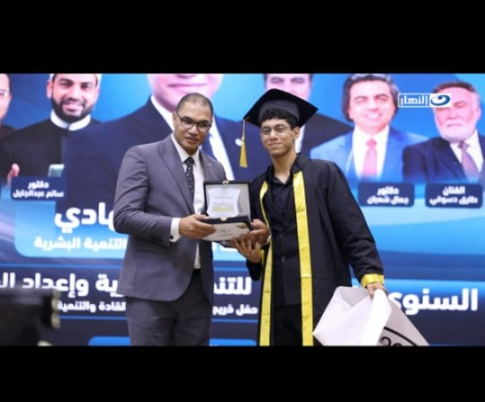
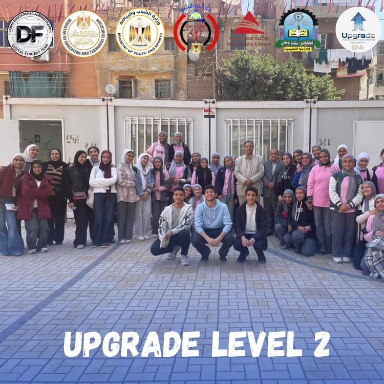
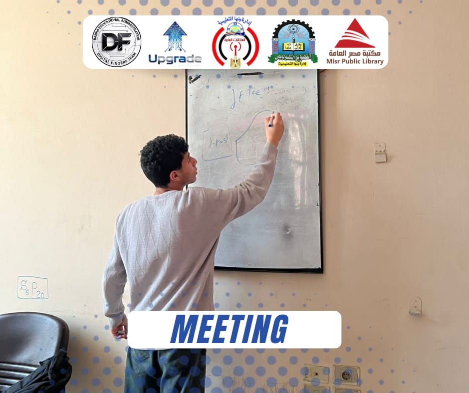
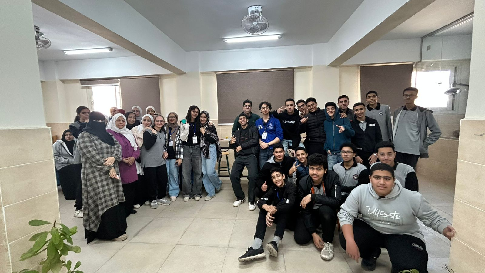
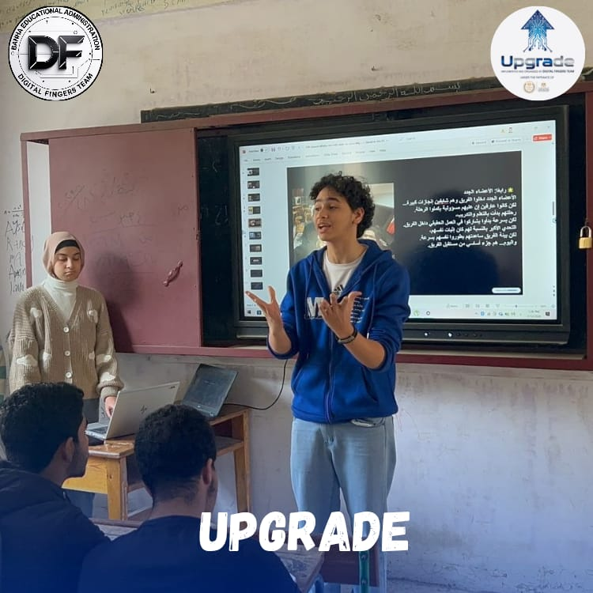
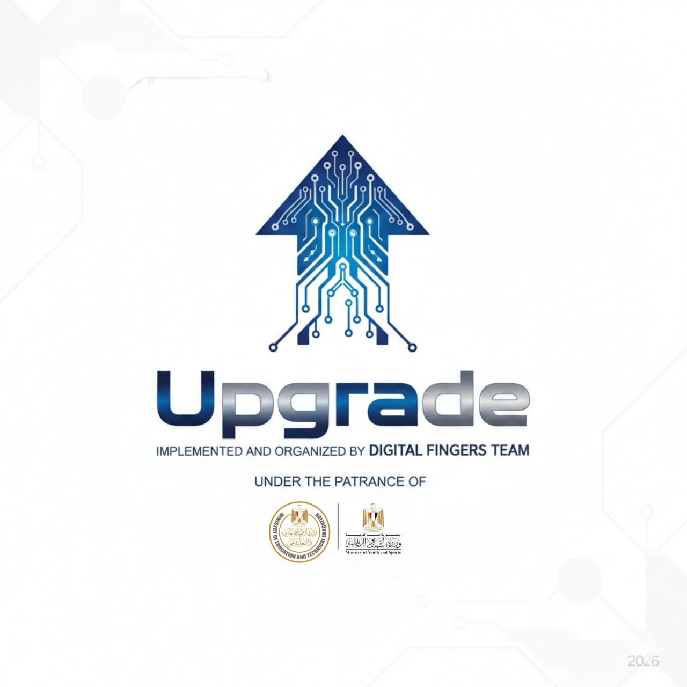
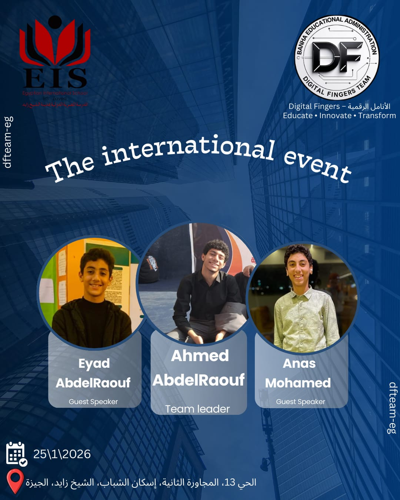
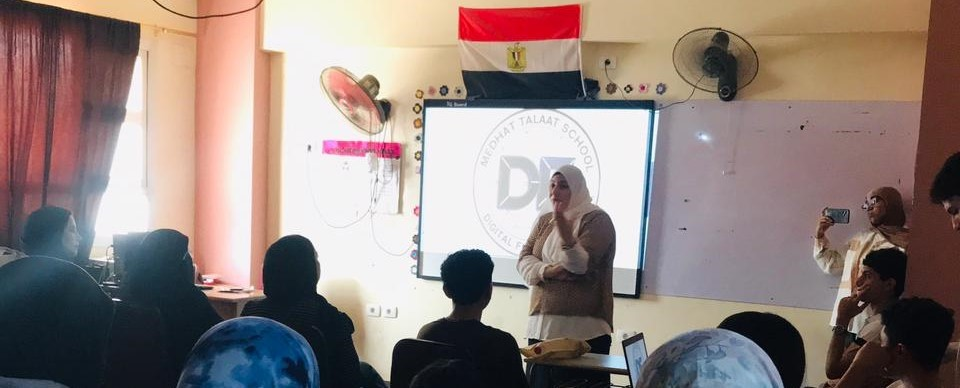

هنا تجد أهم الفعاليات والمعسكرات والأنشطة التي شاركنا فيها.

📺 الظهور الثاني للفريق على قناة الحدث اليوم حدث تاريخي
31 يوليو 2026حلّ فريق الأنامل الرقمية ضيفاً على برنامج "نقطة ومن أول السطر" مع الإعلامية الدكتورة رحاب فارس، للحديث عن قصة نجاح الفريق وإنجازاته التي حققها خلال عام حافل بالتميز.
🎬 أول ظهور رسمي لفريق الأنامل الرقمية على شاشة التلفاز حدث تاريخي
13 سبتمبر 2025تم تكريم القائد العام للفريق المدرب الدولي المعتمد / أحمد عبد الرؤوف سمير على شاشة التلفاز، لكونه أصغر مدرب دولي معتمد في جمهورية مصر العربية والقائد المعتمد. هذا التكريم يعكس مدى التميز والاحترافية التي وصل إليها الفريق تحت قيادته.

🎤 إيفنت عرض إنجازات DF Team
17 سبتمبر 2025إقامة إيفنت لعرض إنجازات فريق الأنامل الرقمية بعد مرور شهر و13 يوم من انطلاق النشاط الصيفي وتحولهم من متدربين إلى فريق له حضور ومنافسين. شهد الإيفنت حضور قيادات الإدارة وعدد من الضيوف المميزين.

👥 زيارة الدكتور سعد عسل والأستاذ أحمد زهران
(خلال حملة Upgrade – القليوبية)قام الدكتور سعد عسل (مدير إدارة بنها) والأستاذ أحمد زهران (مدير الشؤون التنفيذية) بزيارة تفقدية لفريق الأنامل الرقمية وسط فعاليات حملة Upgrade الرسمية المعتمدة على مستوى القليوبية بمدرسة الثانوية بنات، لمتابعة حسن سير العمل والاطلاع على الأداء المتميز للفريق.
🏆 تكريم فريق الأنامل الرقمية – مرور عام من النجاح
(بعد إيفنت سبتمبر 2025)أقامت إدارة بنها التعليمية حفل تكريم خاص لفريق الأنامل الرقمية بمناسبة مرور عام مليئ بالإنجازات المثمرة. تم تكريم القائد العام وأعضاء الفريق تقديراً لجهودهم المتميزة وتأثيرهم الإيجابي في المجتمع التعليمي.

📖 اجتماع الفريق في مكتبة مصر العامة
9 ابريل 2026بعد انتقال الفريق من مقر الإدارة إلى مكتبة مصر العامة، قام القائد العام بعقد اجتماع موسع بعد اجتياز امتحانات الشهر فوراً. تم خلال الاجتماع مناقشة خط سير العمل في الفترة القادمة، ووضع الخطط والاستراتيجيات الجديدة لتطوير أداء الفريق.
⭐ حملة Upgrade - المستوى الثاني (Level 2)
13 مارس 2026تم تنفيذ المستوى الثاني من حملة Upgrade في مدرسة الثانوية بنات ومدرسة أم المؤمنين الثانوية بنات. أظهر الفريق اكتمال مهاراته في التقديم والعرض، وكان يوماً مميزاً في جميع المجاميع. أثار الفريق الجدل في مدينة بنها بالكامل منذ هذا اليوم، وحطم هذا اليوم الأرقام القياسية على مواقع التواصل الاجتماعي.

🏫 رحلة حملة Upgrade - مدرسة الشبان المسلمين ببنها
15 فبراير 2026أثار فريق الأنامل الرقمية إعجاب جميع الحضور في مدرسة الشبان المسلمين ببنها، حيث أشاد كل من مدير مجمع مدارس الشباب الأستاذ عبدالله ومدير التطوير بالمديرية الأستاذ مصطفى بمستوى التنظيم والأداء المتميز لأعضاء الفريق.

📚 رحلة حملة Upgrade - مدرسة مصطفى كامل الرسمية للغات
12 فبراير 2026شهدت مدرسة مصطفى كامل الرسمية للغات انطلاق المرحلة الأولى من حملة Upgrade، حيث أبرز أعضاء الفريق تفوقهم الكبير في تقديم المحتوى والتفاعل مع الطلاب. تميز الأداء باحترافية عالية جذبت انتباه الحضور.

🚀 حملة Upgrade - المعتمدة رسمياً اعتماد رسمي
10 فبراير 2026حملة Upgrade هي حملة رائدة معتمدة من وزارة التربية والتعليم ووزارة الشباب والرياضة، ممثلة في الدكتور ياسر محمود (مدير مديرية التربية والتعليم بالقليوبية) والدكتور وليد الفرماوي (وكيل وزارة الشباب والرياضة بالقليوبية). تهدف الحملة إلى تطوير مهارات الشباب وتمكينهم في مختلف المجالات.

🌍 حدث توعية الشباب - المدرسة المصرية الدولية EIS بالشيخ زايد
25 يناير 2026نظم الفريق حدثاً توعوياً مميزاً في المدرسة المصرية الدولية EIS بالشيخ زايد، حيث كان في الاستقبال الأستاذة إيمان رجب (مديرة مرحلة BYB). وضع الفريق بصمة قوية في المدرسة تشهد لها المدرسة بأكملها حتى اليوم، وسط تفاعل كبير من الطلاب والمعلمين.

🏢 انتقال الفريق إلى مركز التطوير بإدارة بنها التعليمية
19 يناير 2026تم انتقال فريق الأنامل الرقمية رسمياً إلى مركز التطوير التكنولوجي بإدارة بنها التعليمية، ليكون مقراً دائماً للفريق. وقام الأستاذ / أحمد ذكي (مدير إدارة بنها التعليمية) بزيارة المركز للاطلاع على جودة خط سير عمل الفريق والإنجازات التي تم تحقيقها.

🏅 معرض مسابقة ISEF المستوى المحلي
10 ديسمبر 2025تعبنا لكن حققنا إنجاز عظيم ووضعنا لمسة فريق الأنامل في المسابقة وحصل مشروع البراء سعد السيد وأحمد عبدالرؤوف سمير على المركز الأول بإدارة بنها لفئة تحت السن.

🏅 معرض مسابقة ISEF المستوى الإداري
18 نوفمبر 2025حيث قدم الأعضاء مشاريع أبهَرت كل لجنة الحكام ودخلنا بحوالي 4 مشاريع و 8 أعضاء وتأهل منهم مشروعان وأربعة أعضاء إلى المستوى المحلي.
☀️ مقتطفات من تدريبات الأنشطة الصيفية
صيف 2025شهدت التدريبات الصيفية للفريق إقبالاً شديداً تجاوز 100 طالب في الجلسة الواحدة. تميزت محاضرات بايثون التي قدمتها المدربة ريتاج محمد بإعجاب كبير من الحضور، حيث تفاعل الطلاب بشكل لافت مع المحتوى التدريبي.

أحدث ندوة ثقافية
سبتمبر 2025انعقدت الندوة الثقافية الثالثة بمدرسة الشهيد مدحت طلعت بعنوان مهارات الاتصال والتواصل الفعّال. شهدت حضوراً وتفاعلاً مميزاً من أولياء الأمور والطلاب. هدفت إلى إبراز الفرق بين الاتصال والتواصل وأثرهما في بناء علاقات فعّالة.
ندوة مهارات الاتصال والتواصل الفعّال
30 أغسطس 2025ندوة لتطوير مهارات الاتصال الفعّال وبناء علاقات عمل ناجحة، شملت تدريبات عملية وتمارين تفاعلية لرفع مستوى التفاعل والتواصل بين أعضاء الفريق والطلاب.
ورشة برمجة Scratch
25 أغسطس 2025ورشة تدريبية تفاعلية تعرّف المشاركين بأساسيات البرمجة باستخدام بيئة Scratch، حيث تعلّموا كيفية إنشاء ألعاب وقصص ورسوم متحركة بطريقة ممتعة ومبسطة.

منحة إعداد مهارات القادة
20 أغسطس 2025تم تدريب مهارات تدريب المدربين لمعرفة كيف تصبح مدرب ناجح

ندوة ثقافية
أغسطس 2025ندوة مميزة عن مهارات العرض والتقديم (Presentation Skills) بهدف تنمية قدرات المشاركين على التواصل الفعّال وتقديم أفكارهم بثقة واحترافية.